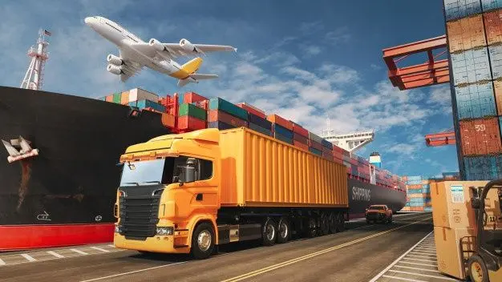
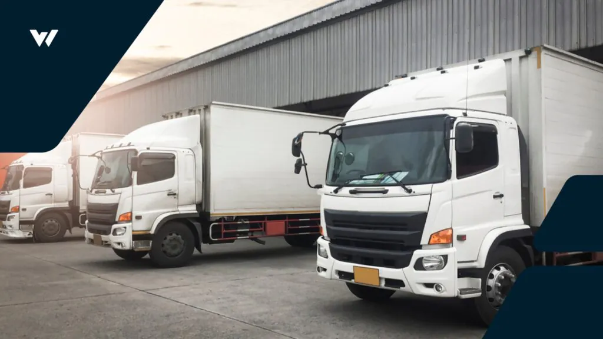

Tanjung Priok · Sejak 2005
Muatan tetap jalan saat angin berubah.
PT. Tahan Angin mengurus angkutan peti kemas, keagenan kapal, dan dokumen ekspor-impor dari Jakarta ke pelabuhan nusantara dan Asia. Jadwal tepat, dokumen rapi, muatan aman.
- Pelabuhan
- IDTPP
- Posisi
- 6°06′S 106°53′E
- Rute
- Domestik · Asia
Skala Beaufort
Pilih kekuatan angin untuk melihat cara kami bekerja.
- 2005Tahun berdiri
- ±150Karyawan darat dan laut
- 4Layanan utama
- 12Pelabuhan tujuan rutin

Tentang kami
Pelayaran nasional dari jantung Tanjung Priok
Didirikan pada 2005, PT. Tahan Angin melayani angkutan peti kemas domestik dan internasional, keagenan kapal, serta jasa dokumentasi ekspor-impor.
Nama "Tahan Angin" adalah janji kami: tetap andal dalam kondisi apa pun. Kami bekerja dekat dengan terminal peti kemas di Tanjung Priok, sehingga jadwal sandar, bongkar muat, dan dokumen bisa dipantau dari satu tim.
- Bidang usaha
- Pelayaran & keagenan kapal
- Kantor pusat
- Tanjung Priok, Jakarta Utara
- Terminal mitra
- JICT · KOJA
- Jenis muatan
- FCL · LCL
Layanan
Satu tim untuk kapal, kontainer, dan dokumen
Pilih layanan untuk melihat cakupan pekerjaannya. Semua layanan bisa digabung dalam satu kontrak.
Alur kerja
Dari booking sampai bongkar
Setiap pengiriman melewati enam tahap. Anda mendapat kabar di tiap tahap, tanpa perlu menelepon untuk menanyakan posisi muatan.
Booking
Konfirmasi ruang muat, jenis kontainer, dan jadwal kapal.
Booking confirmationDokumen
Draf B/L dan manifest diperiksa sebelum cut-off.
Draft B/L · ManifestGate-in
Kontainer masuk terminal dan dicocokkan dengan export list.
JICT · KOJAMuat
Muatan disusun sesuai stowage plan dan dicatat.
Stowage planBerlayar
Kapal berangkat. ETA dikirim ke pelanggan dan agen tujuan.
ETD · ETABongkar
Kontainer dibongkar dan realisasinya dilaporkan.
RBM
Visi
Menghubungkan pelabuhan nusantara dengan pasar dunia.
Misi
- Memberikan layanan pengiriman yang tepat waktu, aman, dan efisien.
- Menjaga ketepatan dokumen pengapalan agar barang tiba tanpa kendala di pelabuhan tujuan.
- Membangun kemitraan jangka panjang dengan pelanggan, terminal, dan agen.
- Mengutamakan keselamatan kerja dan kelestarian lingkungan laut.
Nilai perusahaan
Tetap berlayar dan melayani di segala kondisi.
Menjaga muatan dan kepercayaan pelanggan.
Setiap dokumen dan muatan tercatat benar.
Merespons kebutuhan pelanggan dengan sigap.
Armada & operasi
Di jalan, di dermaga, di laut
Armada darat mitra kami mengantar kontainer dari gudang pelanggan ke terminal, lalu kapal membawanya ke pelabuhan tujuan.

Kontak
Ada muatan yang perlu dikirim?
Ceritakan rute dan jenis muatan Anda. Tim kami di Tanjung Priok akan menyiapkan penawaran.
- AlamatJl. Pelabuhan Raya No. 10, Tanjung Priok, Jakarta Utara
- Telepon(021) 000-0000
- Emailinfo@tahanangin.co.id
- Jam operasionalSenin–Sabtu · 08.00–17.00 WIB